Detalle de los 20 procedimientos aplicados con su evidencia gráfica correspondiente (haz clic en cualquier captura para ampliarla).
1 Fecha y hora del sistema — date > fechaSistema.txt
Procedimiento: Se abrió el Símbolo del sistema dentro de la carpeta de trabajo Act19 y se ejecutó date redirigiendo la salida (>) al archivo fechaSistema.txt. Después se listó la carpeta con ls para confirmar que el archivo se creó y se abrió en el Bloc de notas para verificar su contenido.
Resultado y análisis: El archivo registra la fecha 15/11/2026. El comando además solicita escribir una nueva fecha, que no se modificó para no alterar el sistema. Esta captura solo devuelve la fecha; para registrar también la hora se recomienda Get-Date o time /t.
Valor forense: Fija el punto de referencia temporal de toda la adquisición y permite correlacionar la evidencia con los registros de eventos.
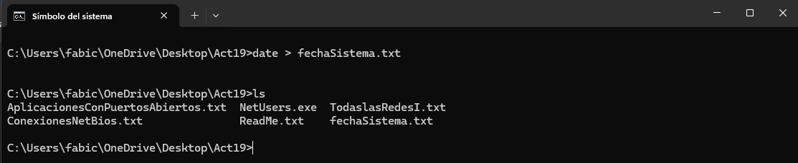
ACT19.1. Ejecución de date y comprobación en consola.
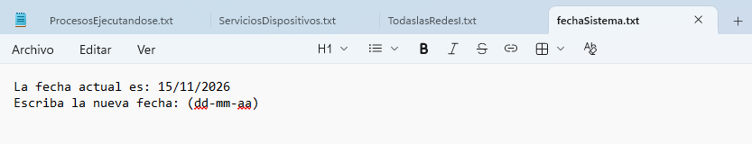
ACT19.2. Verificación del archivo fechaSistema.txt en el Bloc de notas.
2 Procesos en ejecución — tasklist > ProcesosEjecutandose.txt
Procedimiento: Con tasklist se obtiene la lista de procesos activos; la salida se redirigió a ProcesosEjecutandose.txt y se abrió el archivo para comprobarla.
Resultado y análisis: El listado muestra nombre de imagen, PID, nombre y número de sesión y uso de memoria. Aparecen procesos propios de Windows (System, smss, csrss, wininit, winlogon, services, lsass, svchost) en la sesión 0 (servicios) y en la sesión 1 (consola). No se observan nombres extraños.
Valor forense: Es la base para detectar procesos desconocidos o con nombres engañosos. Los PID se usan después para vincular procesos con conexiones de red.
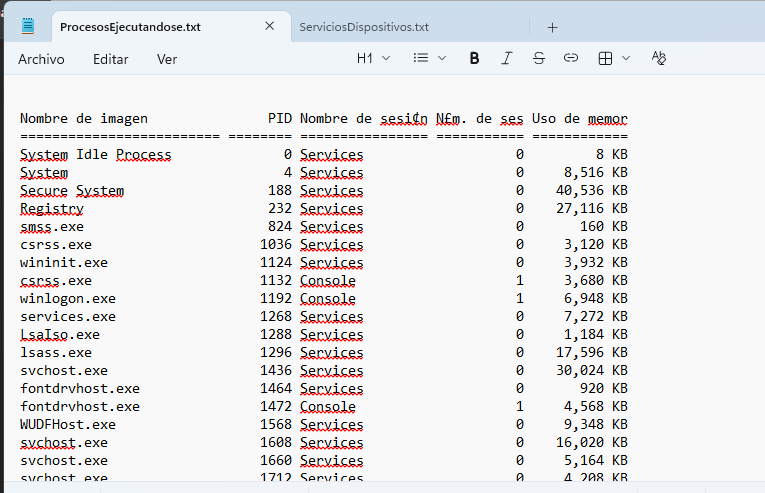
ACT19.3. Salida de tasklist en ProcesosEjecutandose.txt.
3 Servicios desde CMD y PowerShell — get-service / sc query
Procedimiento: En PowerShell se ejecutó get-service > ServiciosDispositivoA.txt y se revisó con more. En el Símbolo del sistema se ejecutó sc query > ServiciosDispositivos.txt y se abrió en el Bloc de notas.
Resultado y análisis: PowerShell lista todos los servicios (activos y detenidos) en una tabla de tres columnas (Status, Name, DisplayName). sc query muestra por defecto solo los servicios activos, en bloques de texto con campos técnicos. Ambos arrojan el mismo inventario con distinto nivel de detalle; los servicios son coherentes con un equipo personal.
Valor forense: Los servicios son un punto típico de persistencia de malware. PowerShell sirve para el panorama general y sc para el detalle técnico.
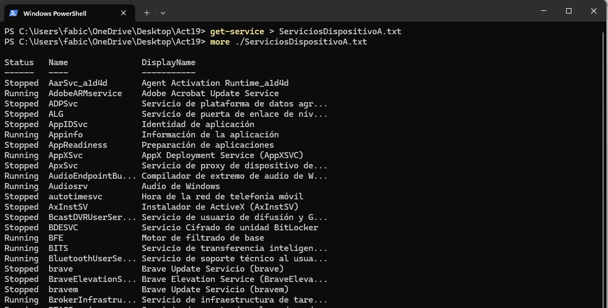
ACT19.4. Listado de servicios mediante get-service en PowerShell.
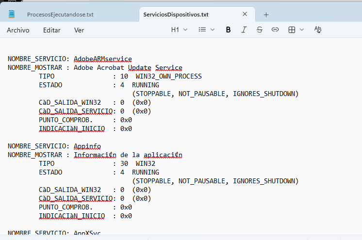
ACT19.5. Detalle técnico de servicios mediante sc query en CMD.
4 Usuarios con sesión actual — .\NetUsers.exe > UsuariosLogueados.txt
Procedimiento: Se ejecutó la herramienta de terceros NetUsers.exe desde la carpeta de trabajo y se redirigió su salida a UsuariosLogueados.txt; después se revisó con more.
Resultado y análisis: La salida indica Current users logged on locally at FABI sin listar ninguna sesión, y termina con The command completed successfully. Esto debe corroborarse con otro método (por ejemplo query user), porque normalmente la cuenta fabic tendría sesión.
Valor forense: Identifica quién tenía acceso al equipo en el momento de la captura. Al ser un binario externo, en un caso real debe ejecutarse desde medios de confianza y registrar su hash.
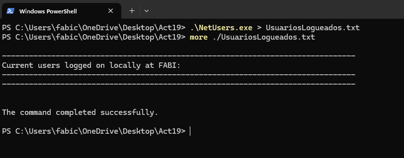
ACT19.6. Consulta de sesiones activas con NetUsers.exe.
5 Usuarios que alguna vez iniciaron sesión — Get-LocalUser
Procedimiento: En PowerShell se ejecutó Get-LocalUser, que enumera las cuentas locales del equipo con su estado.
Resultado y análisis: Hay seis cuentas: Administrador, DefaultAccount, Invitado, WDAGUtilityAccount y WsiAccount están deshabilitadas, y solo fabic está habilitada. No hay cuentas nuevas ni sospechosas. Para conocer el historial real de inicios de sesión se necesitan los eventos 4624 del registro Security o la propiedad LastLogon.
Valor forense: Permite detectar cuentas creadas por un atacante o cuentas integradas habilitadas sin justificación.
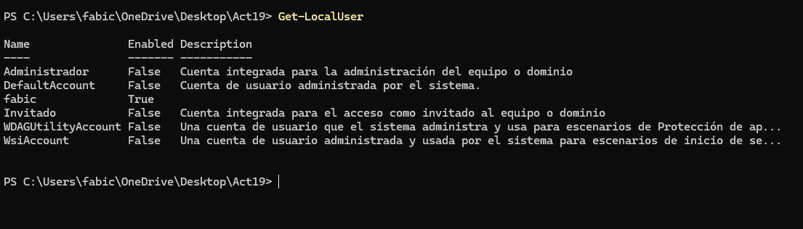
ACT19.7. Enumeración de cuentas locales con Get-LocalUser.
6 Información de red — ipconfig /all > InfoRed.txt
Procedimiento: En PowerShell se ejecutó ipconfig /all redirigiendo la salida a InfoRed.txt y se revisó con more.
Resultado y análisis: Host FABI, tipo de nodo híbrido, enrutamiento IP deshabilitado y proxy WINS deshabilitado. Se listan los adaptadores Wi-Fi Direct con sus direcciones físicas y DHCP habilitado, además del adaptador Wi-Fi activo (IP 10.0.0.9).
Valor forense: Identifica al equipo en la red, sus interfaces y direcciones MAC, y sirve para relacionarlo con otros dispositivos y registros.
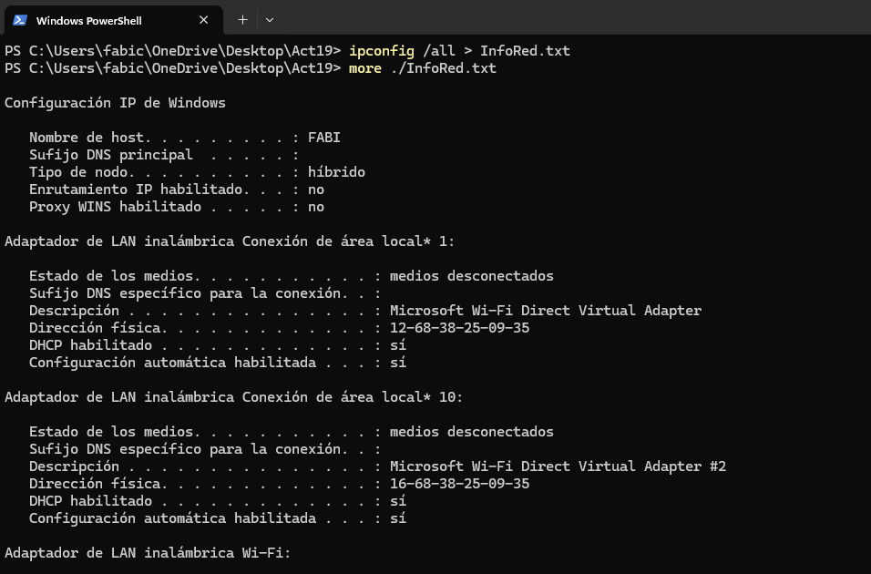
ACT19.8. Detalle de adaptadores de red con ipconfig /all.
7 Nombres y sesiones NetBIOS — nbtstat -S > ConexionesNetBios.txt
Procedimiento: Se ejecutó nbtstat -S en PowerShell, con salida a ConexionesNetBios.txt, y se abrió con more.
Resultado y análisis: Se revisaron las interfaces Bluetooth, Wi-Fi (10.0.0.9) y las conexiones de área local* 1 y 10; en todas aparece No hay conexiones, es decir, no hay sesiones NetBIOS activas. Nota: -S muestra sesiones; los nombres NetBIOS locales se obtienen con nbtstat -n.
Valor forense: Descarta sesiones NetBIOS hacia otros equipos, que podrían indicar movimiento lateral.
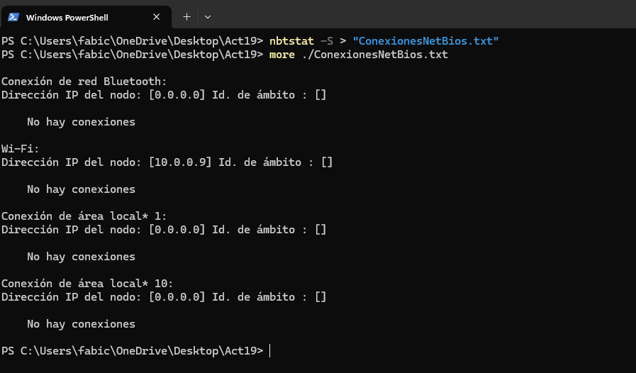
ACT19.9. Verificación de sesiones NetBIOS mediante nbtstat -S.
8 Conexiones establecidas — netstat -an > ConexionesEstablecidas.txt
Procedimiento: Se ejecutó netstat -an con salida a ConexionesEstablecidas.txt y se revisó con more.
Resultado y análisis: Hay puertos en escucha (135, 139, 445, 5040, 49664 a 49676, 54307 y 57621) y conexiones ESTABLISHED y CLOSE_WAIT desde 10.0.0.9 hacia direcciones externas, casi todas por el puerto 443. Llama la atención una conexión al puerto 4070 (104.154.127.247) y otra a 149.154.174.200:443, que conviene verificar.
Valor forense: Muestra con qué servidores externos se comunica el equipo; es clave para detectar comando y control o exfiltración.
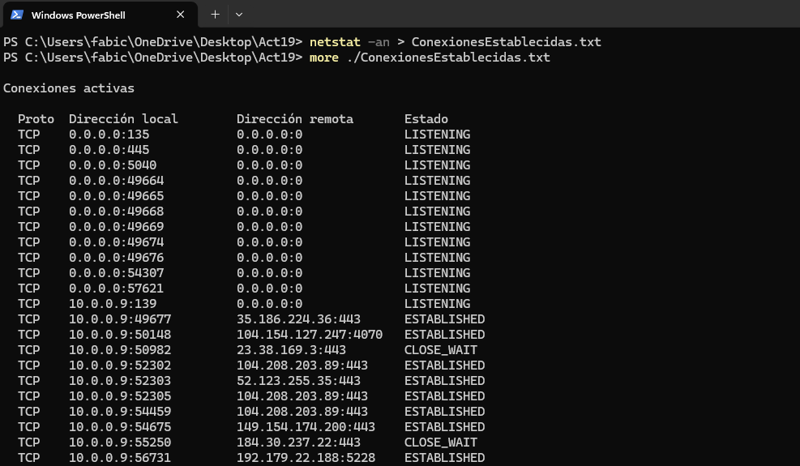
ACT19.10. Tabla de conexiones activas y puertos en escucha con netstat -an.
9 Aplicaciones con puertos abiertos — netstat -anob > AplicacionesConPuertosAbiertos.txt
Procedimiento: Se abrió PowerShell como administrador, se entró a la carpeta Act19 y se ejecutó netstat -anob, que añade el PID (-o) y el ejecutable (-b) de cada conexión.
Resultado y análisis: El puerto 135 corresponde a svchost (RpcSs), el 5040 a svchost (CDPSvc), el 49668 a svchost (Schedule), el 49669 a svchost (EventLog) y el 445 al PID 4 (System). Los PID 1296 (lsass.exe) y 1124 (wininit.exe) coinciden con la lista de tasklist para los puertos 49664 y 49665. El puerto 7680 (PID 19452) aparece sin información de propiedad.
Valor forense: Vincula cada puerto con un proceso concreto, lo que permite identificar programas que se comunican sin ser legítimos.
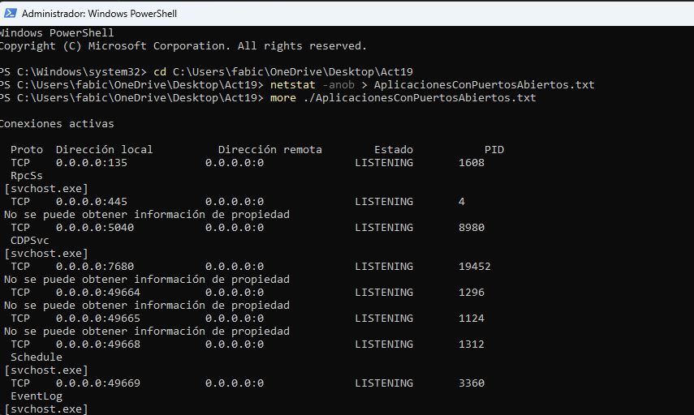
ACT19.11. Relación de puertos, PID y ejecutables con netstat -anob.
10 Dominios consultados (caché DNS) — ipconfig /displaydns > dns.txt
Procedimiento: Con privilegios de administrador se ejecutó ipconfig /displaydns, que vuelca la caché del resolvedor DNS, y se guardó en dns.txt.
Resultado y análisis: Se observan dominios de Microsoft (array611 y array607.prod.do.dsp.mp.microsoft.com, ctldl.windowsupdate.com), asociados a Windows Update y Delivery Optimization. En lo capturado no hay dominios sospechosos.
Valor forense: La caché DNS es volátil y revela a qué sitios accedió el equipo recientemente.
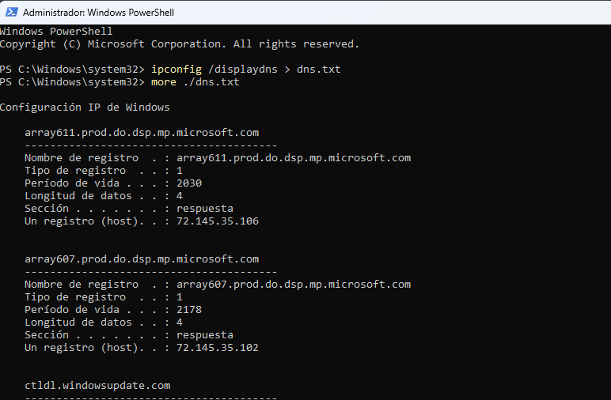
ACT19.12. Consulta de caché DNS con ipconfig /displaydns.
11 Tabla ARP (IP y MAC) — arp -a
Procedimiento: En el Símbolo del sistema se ejecutó arp -a para ver la tabla que relaciona direcciones IP con direcciones físicas.
Resultado y análisis: En la interfaz 10.0.0.9 hay cuatro vecinos dinámicos (10.0.0.1, 10.0.0.4, 10.0.0.5 y 10.0.0.10) y entradas estáticas de broadcast y multicast. No se observan MAC duplicadas, por lo que no hay señales de suplantación ARP.
Valor forense: Identifica los dispositivos con los que el equipo se comunicó recientemente en la red local.
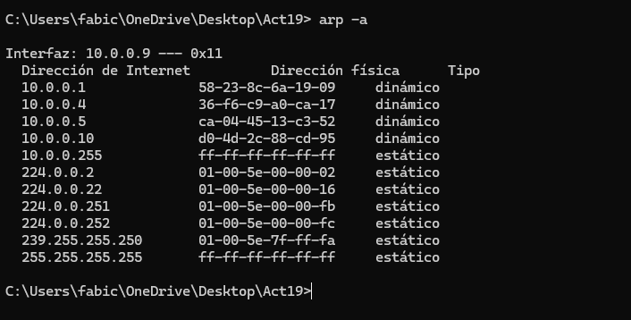
ACT19.13. Resolución de direcciones físicas e IP con arp -a.
12 Redes WiFi conectadas — netsh wlan show profiles > TodaslasRedesI.txt
Procedimiento: En CMD se ejecutó netsh wlan show profiles con salida a TodaslasRedesI.txt, y el archivo se abrió en el Bloc de notas.
Resultado y análisis: No hay perfiles de directiva de grupo. Los perfiles de usuario guardados son CNT_UPSLP, CC_UPSLP, Totalplay-5G-10e8, UAEM3_UPSLP y Superwifi Network 2.
Valor forense: Permite reconstruir los lugares y redes a las que se conectó el equipo y detectar redes inesperadas.
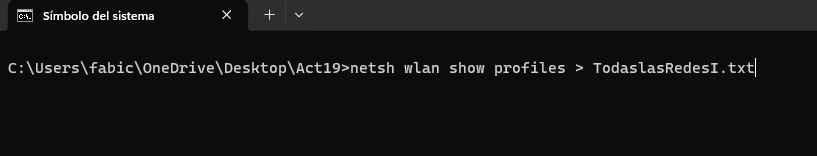
ACT19.14. Ejecución de netsh wlan show profiles en CMD.
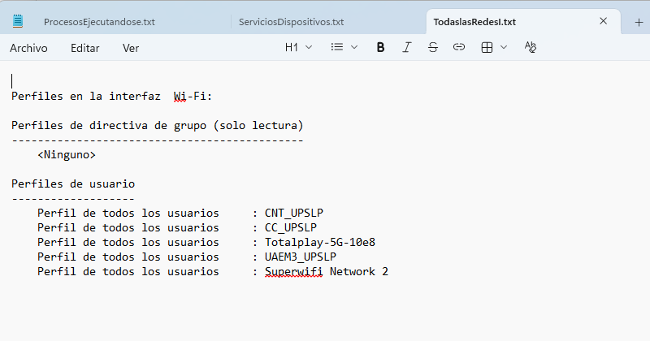
ACT19.15. Listado de redes inalámbricas en TodaslasRedesI.txt.
13 Historial de comandos — doskey /history
Procedimiento: En CMD se ejecutó doskey /history, que muestra los comandos escritos en esa sesión de consola.
Resultado y análisis: Se ve la secuencia completa de la actividad (tasklist, date, cd Act19, sc query, NetUsers.exe, netstat -anob), incluidos errores de escritura como cld, datetime y query. Solo cubre la sesión de CMD abierta; el historial de PowerShell se guarda por separado.
Valor forense: Documenta qué ejecutó el investigador sobre el equipo, lo que protege la validez y trazabilidad de la evidencia.
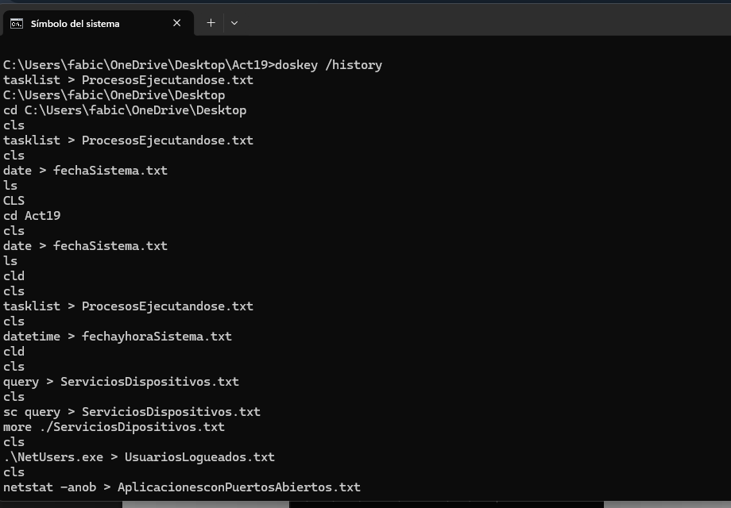
ACT19.16. Registro de comandos ejecutados con doskey /history.
14 Unidades mapeadas — net use
Procedimiento: En CMD se ejecutó net use, que lista las conexiones a recursos de red y las unidades mapeadas.
Resultado y análisis: El resultado es No hay entradas en la lista: no hay unidades de red mapeadas.
Valor forense: Descarta acceso a recursos remotos o posible exfiltración hacia unidades de red.
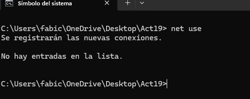
ACT19.17. Consulta de unidades mapeadas mediante net use.
15 Recursos compartidos — net share
Procedimiento: En CMD se ejecutó net share para enumerar los recursos que el equipo comparte en la red.
Resultado y análisis: Solo aparecen los recursos administrativos predeterminados: C$ (C:\), IPC$ (IPC remota) y ADMIN$ (C:\Windows). No hay carpetas compartidas personalizadas.
Valor forense: Detecta carpetas expuestas que un atacante podría usar para mover datos o acceder al equipo.
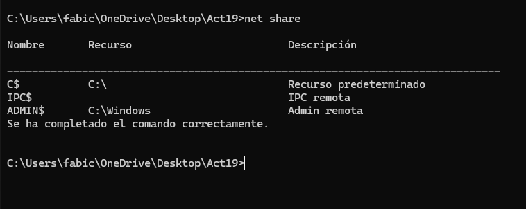
ACT19.18. Enumeración de recursos compartidos con net share.
16 Información del equipo — systeminfo > SystemInfo.txt
Procedimiento: En PowerShell se ejecutó systeminfo con salida a SystemInfo.txt y se revisó con more.
Resultado y análisis: Host FABI, Windows 11 Home Single Language (10.0.26300), instalación original el 16/10/2026, último arranque el 14/11/2026 08:13, HP Laptop 15-dy5xxx, BIOS AMI F.19, zona horaria UTC-06:00 y memoria física de 7,863 MB con 1,215 MB disponibles.
Valor forense: Da el perfil completo del equipo y el contexto temporal; la poca memoria libre refuerza la necesidad de capturar la RAM pronto.
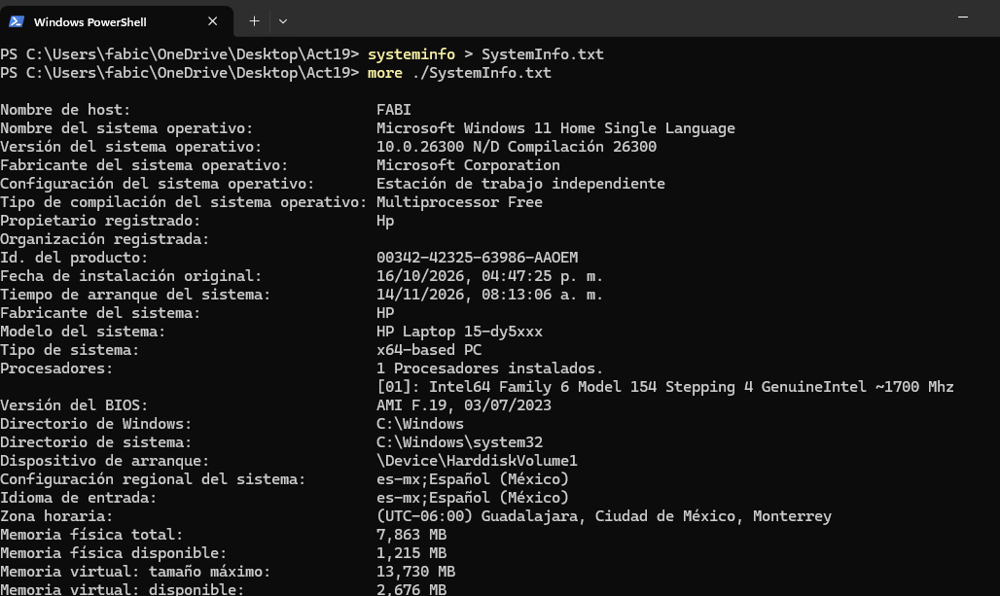
ACT19.19. Detalles de hardware y sistema operativo mediante systeminfo.
17 Tareas programadas — schtasks > TareasProgramadas.txt
Procedimiento: En PowerShell se ejecutó schtasks con salida a TareasProgramadas.txt y se revisó con more.
Resultado y análisis: Se ven tareas de Adobe Acrobat Update, OneDrive (actualización, reporte e inicio) y Microsoft Office, todas con apariencia legítima. En las carpetas \GoogleSystem y \Microsoft aparece no hay tareas programadas disponibles para el nivel de acceso, porque el comando se ejecutó sin privilegios elevados; conviene repetirlo como administrador.
Valor forense: Las tareas programadas son un mecanismo común de persistencia de malware.
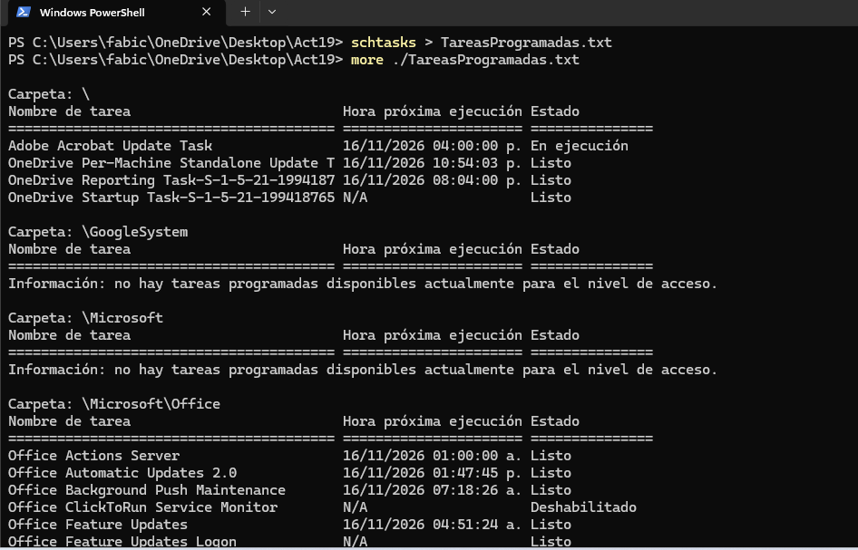
ACT19.20. Listado de tareas programadas mediante schtasks.
18 Exportación de logs del sistema — wevtutil epl System ...\LogsSistema.evtx
Procedimiento: En CMD se ejecutó wevtutil epl System indicando como destino un archivo .evtx en el Escritorio. Después se abrió el Explorador de archivos para confirmar que el archivo se generó.
Resultado y análisis: Se creó el registro de eventos del sistema, con un tamaño aproximado de 4,164 KB. En la misma carpeta se aprecian todos los archivos de evidencia con sus fechas de modificación (del 15/11/2026 11:10 p. m. al 16/11/2026 12:10 a. m.).
Valor forense: Conserva los logs para analizarlos después con un visor de eventos sin depender del equipo vivo.
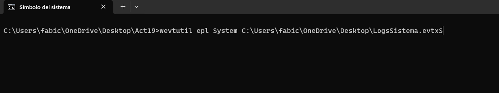
ACT19.21. Exportación de eventos del sistema con wevtutil epl.
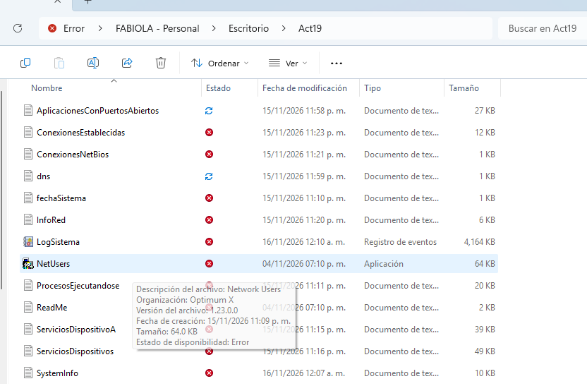
ACT19.22. Verificación de los archivos generados en la carpeta Act19.
19 Archivo hosts — Get-Content ...\drivers\etc\hosts > Host.txt
Procedimiento: Con privilegios de administrador se leyó el archivo hosts con Get-Content y se guardó en Host.txt.
Resultado y análisis: Solo contiene el texto de ejemplo por defecto de Microsoft; las líneas de ejemplo y las de localhost están comentadas con #. No hay redirecciones de dominios personalizadas.
Valor forense: Un hosts modificado puede redirigir sitios legítimos hacia servidores del atacante o bloquear actualizaciones de seguridad.
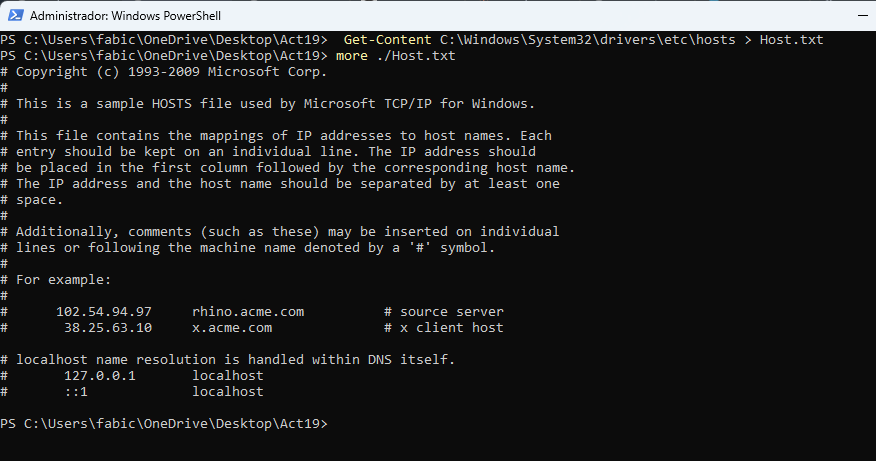
ACT19.23. Lectura del archivo hosts del sistema en Host.txt.
20 Árbol de directorios por fecha de creación — Get-ChildItem C:\ -Recurse -Force ... > ArbolDirectorios.txt
Procedimiento: En PowerShell se listaron recursivamente los archivos y carpetas de C:\, se ordenaron por CreationTime y se exportaron a ArbolDirectorios.txt, que se abrió en el Bloc de notas.
Resultado y análisis: Las carpetas base (Users, Windows, Program Files, etc.) datan del 01/04/2024; pagefile.sys, swapfile.sys, hiberfil.sys y las uniones se crearon el 16/10/2026 (instalación) y OneDriveTemp el 04/11/2026. Existe hiberfil.sys (unos 3.3 GB) y pagefile.sys (unos 6.1 GB), que pueden contener restos de memoria.
Valor forense: Permite reconstruir qué se creó y cuándo; los elementos más recientes son los primeros que se revisan en una línea de tiempo.
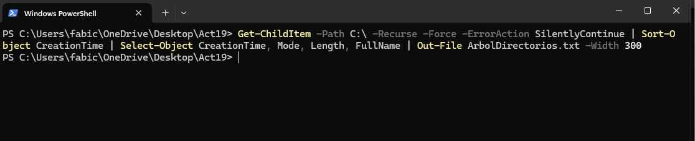
ACT19.24. Generación del árbol de directorios ordenado por fecha.
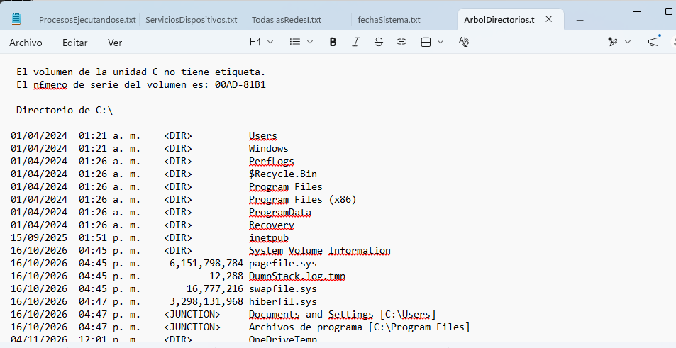
ACT19.25. Inspección de fechas y archivos de sistema en C:\.
Correlación entre evidencias: Los PID de tasklist coinciden con los de netstat -anob: el puerto 49664 pertenece al PID 1296 (lsass.exe) y el 49665 al PID 1124 (wininit.exe), por lo que los puertos altos en escucha corresponden a procesos propios de Windows. La tabla ARP no muestra MAC duplicadas y solo la cuenta fabic está habilitada. Los siguientes puntos no son prueba de malicia por sí solos, pero deben validarse:
| Hallazgo |
Por qué importa |
Acción recomendada |
| Conexión a 104.154.127.247 por el puerto 4070 | Puerto no estándar; el resto de las conexiones usa 443. | Identificar el proceso y consultar el propietario de la IP (whois, reputación). |
| Conexión a 149.154.174.200:443 | Rango asociado a Telegram; solo es normal si la aplicación está instalada. | Confirmar si Telegram está en uso; si no, tratar como sospechosa. |
| Puertos en escucha 7680, 54307 y 57621 | Sin explicación inmediata en las capturas; el 7680 sin información de propiedad. | Correlacionar el PID con tasklist /svc y verificar la firma digital. |
| NetUsers.exe (herramienta de terceros) | Binario ejecutado en el equipo investigado. | Verificar hash y origen; usar medios externos de confianza. |
También se observó hibernación activa (hiberfil.sys, unos 3.3 GB) y archivo de paginación (pagefile.sys, unos 6.1 GB), que pueden contener restos de memoria. Los puertos 135, 139 y 445 en escucha y los recursos administrativos C$, IPC$ y ADMIN$ son normales, pero amplían la superficie de ataque en redes no confiables.